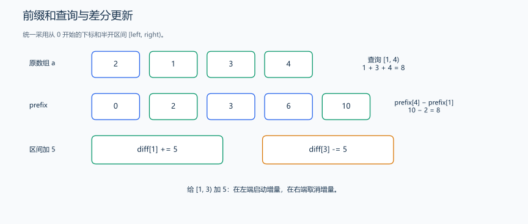
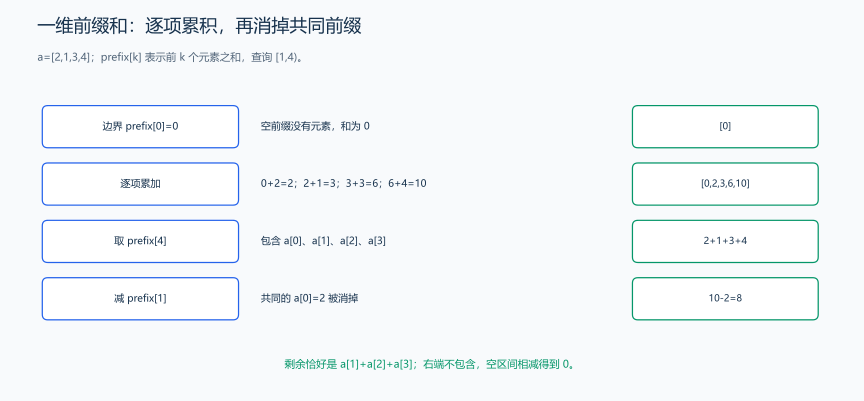
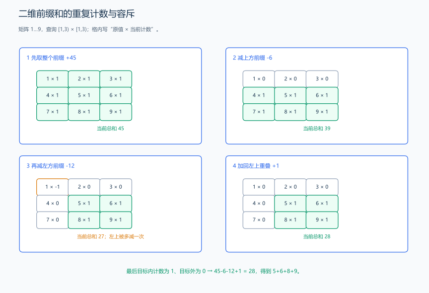
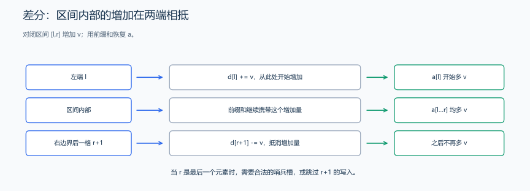
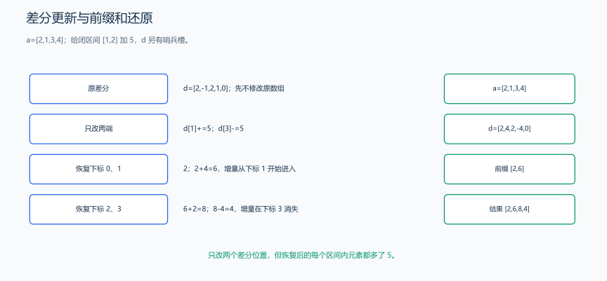

（三） 前缀和与差分
若每次区间查询都重新累加，会反复访问相同元素。先保存从起点到各位置的累计结果；若问题改成很多次区间修改，再反过来记录边界变化。
1. 一维前缀和
如果需要多次查询区间和，可以先累计数组前缀。
题目原文（自拟）： 给定整数数组和若干合法半开区间 [left, right)，求各区间的元素和；空区间的和为 0。所有前缀与区间和可放入 long long。
定义 prefix[i] 为前 i 个元素的和，prefix[0] = 0：
\[ prefix[i+1] = prefix[i] + a[i] \]
那么半开区间 [left, right) 的和为：
\[ sum(left,right) = prefix[right] - prefix[left] \]
从重复计算推导前缀状态。 若每个询问都扫描区间，q 次询问最坏需要 \(O(nq)\)。而这些区间包含许多重复的前缀，可以把“前 i 个元素的累计和”保存下来。
prefix[right] 包含下标 0…right-1，prefix[left] 包含 0…left-1。两者相减，前面相同的部分抵消，恰好留下 left…right-1。这也解释了为什么半开区间直接用端点，而闭区间 [l,r] 应改成 prefix[r+1]-prefix[l]。
多留 prefix[0]=0 让左端为 0 时也能使用同一公式。left=right 时两项相等，空区间自然得到 0。数组有负数也不影响相减公式；前缀和查询并不要求数组元素为正。
#include <vector>
using namespace std;
vector<long long> buildPrefix(const vector<int> &values) {
// prefix[i] 表示前 i 个元素的和，多保留一个初始 0。
vector<long long> prefix(values.size() + 1, 0);
for (size_t i = 0; i < values.size(); ++i) {
prefix[i + 1] = prefix[i] + values[i];
}
return prefix;
}
例：a = [2, 1, 3, 4]，prefix = [0, 2, 3, 6, 10]，区间 [1, 4) 的和为 10 - 2 = 8。

从 prefix[0]=0 开始，每读入一个元素，就把它接到此前的累计和上，依次写出 2、3、6、10。查询 [1,4) 时，prefix[4] 包含位置 0…3，prefix[1] 恰好包含不需要的位置 0，相减得到 8；这也解释了前缀数组为何比原数组多一格。
预处理 \(O(n)\)，每次查询 \(O(1)\)，额外空间 \(O(n)\)。原数组频繁修改时，这份前缀和不会自动更新。
练习题： 洛谷 P8218 — 求区间和。
2. 二维前缀和
题目原文（自拟）： 给定一个矩形整数矩阵及若干合法子矩形，求每个子矩形的元素和。矩形用半开范围 [r1, r2) × [c1, c2) 表示，所有累计值和计算中间值均在 long long 范围内。
约定原矩阵从下标 0 开始；prefix[i][j] 表示左上角 i 行、j 列的元素和：
\[ prefix[i+1][j+1] = a[i][j] + prefix[i][j+1] + prefix[i+1][j] - prefix[i][j] \]
矩形 [r1, r2) × [c1, c2) 的和为：
\[ prefix[r2][c2] - prefix[r1][c2] - prefix[r2][c1] + prefix[r1][c1] \]
加上两个前缀时左上区域被重复计算，所以要减掉一次；查询时则使用同样的容斥思想。

对值为 1…9 的 3×3 数组查询 [1,3)×[1,3)：先取大矩形和 45，减上方 6 得 39，再减左方 12 得 27；左上角的 1 被减了两次，加回后为 28。四幅图标出每个格子的计数从 1、0、-1 再修正到 0，目标四格始终各保留一次。
把查询拆成几块，检查每个格子被计了几次。 先取 [0,r2)×[0,c2) 的大矩形，再减掉上方 [0,r1)×[0,c2) 与左方 [0,r2)×[0,c1)。目标外的左上角同时属于上方和左方，被减了两次，需要加回一次。
对矩阵 [[1,2,3],[4,5,6]]，查询 [0,2)×[1,3)：先取全部 21，上方高度为 0 所以减 0，左方第一列为 1+4=5，左上角也是 0，结果为 21-0-5+0=16。额外的第 0 行、第 0 列都是 0，使靠边与空矩形也能使用同一个式子。
建表时先加上方、加左方，再减掉重复的左上角，最后加入当前格子，与查询的容斥过程相同。这里预处理与查询都用半开区间，r2、c2 表示矩形之后的位置，因此直接代入图中的四个前缀值。
#include <vector>
using namespace std;
vector<vector<long long>> buildPrefix2D(const vector<vector<int>> &a) {
int rows = static_cast<int>(a.size());
int columns = rows == 0 ? 0 : static_cast<int>(a[0].size());
vector<vector<long long>> prefix(rows + 1, vector<long long>(columns + 1, 0));
for (int i = 0; i < rows; ++i) {
for (int j = 0; j < columns; ++j) {
// 上方加左方会重复计算左上角，减去一次后再加入当前格。
prefix[i + 1][j + 1] = a[i][j] + prefix[i][j + 1] + prefix[i + 1][j] - prefix[i][j];
}
}
return prefix;
}
long long rectangleSum(const vector<vector<long long>> &prefix, int r1, int c1, int r2, int c2) {
// 两次减去多余区域后，左上角被多减一次，因此加回来。
return prefix[r2][c2] - prefix[r1][c2] - prefix[r2][c1] + prefix[r1][c1];
}样例与解释： 矩阵 [[1,2,3],[4,5,6]]，调用 rectangleSum(buildPrefix2D(a), 0, 1, 2, 3) 返回 16，对应 2+3+5+6。预处理时间与空间均为 \(O(RC)\)，一次查询为 \(O(1)\)。
练习题： 洛谷 P1387 — 最大正方形（可用二维前缀和检查候选正方形，也可进一步学习 DP）、洛谷 P3397 — 地毯（练习二维差分，并用二维前缀恢复）。
3. 差分
差分适合“多次区间加，最后统一查看结果”。定义 diff[0] = a[0]，diff[i] = a[i] - a[i-1]。给 [left, right) 的所有元素加上 delta，只需修改两端：
题目原文（自拟）： 给定数组和若干合法区间加操作，把每个区间内的元素都加上指定增量，最后输出修改后的数组。累计结果在 long long 范围内。下面先演示差分的端点修改，再给完整程序。
两端修改为什么能影响整个区间？ 还原下标 i 的值时，计算的是 diff[0]+…+diff[i]。在 diff[left] 加 delta 后，从 left 开始的每个前缀都会多出这份增量；到 right 再加上 -delta，增量被抵消，所以只有 [left,right) 受影响。
例如原差分为 [2,-1,2,1,0]，给 [1,3) 加 5 后变成 [2,4,2,-4,0]。累计得到 2、6、8、4：下标 1 开始多出 5，下标 3 又取消它。长度 n+1 的数组保存右端取消标记，使 right=n 的操作也无需特殊分支；最后只恢复前 n 个原数组元素。
若题目要求每次修改后立刻回答区间和，这种“最后一次性还原”的模板不能直接完成任务，需要进一步考虑树状数组或线段树等结构。

闭区间增加由左端开始、右端后一格抵消。

原数组 [2,1,3,4] 的差分为 [2,-1,2,1,0]，最后一格是边界备用位置。给闭区间 [1,2] 加 5，只改 diff[1]+=5 与 diff[3]-=5，得到 [2,4,2,-4,0]。从左向右累计：2、6、8、4；加法从位置 1 开始影响后缀，到位置 3 被抵消，因此区间外的元素恢复原值。
#include <vector>
using namespace std;
vector<long long> diff{2, -1, 2, 1, 0}; // [2,1,3,4] 的差分，多留一个尾部位置。
int left = 1, right = 3;
long long delta = 5;
diff[left] += delta;
diff[right] -= delta; // diff 多分配一个位置，允许 right == n最终对 diff 做前缀和，还原数组。
#include <iostream>
#include <vector>
using namespace std;
int main() {
vector<long long> values{2, 1, 3, 4};
int n = static_cast<int>(values.size());
vector<long long> diff(n + 1, 0);
for (int i = 0; i < n; ++i) {
diff[i] = values[i] - (i == 0 ? 0 : values[i - 1]);
}
diff[1] += 5;
diff[3] -= 5; // 给 [1, 3) 加 5
long long current = 0;
for (int i = 0; i < n; ++i) {
current += diff[i];
cout << current << ' ';
}
cout << '\n'; // 2 6 8 4
}注意： 前缀和常用于快速查询，差分常用于批量修改；它们解决的问题不同。所有累计结果都要检查数值范围。
样例与解释： 原数组 [2,1,3,4]，操作 [1,3) 加 5，输出 2 6 8 4。两端操作启动和取消增量，还原时只影响下标 1、2。处理 n 个元素、q 次操作共 \(O(n+q)\) 时间，额外空间 \(O(n)\)。
练习题： 洛谷 P2367 — 语文成绩、洛谷 P3397 — 地毯。